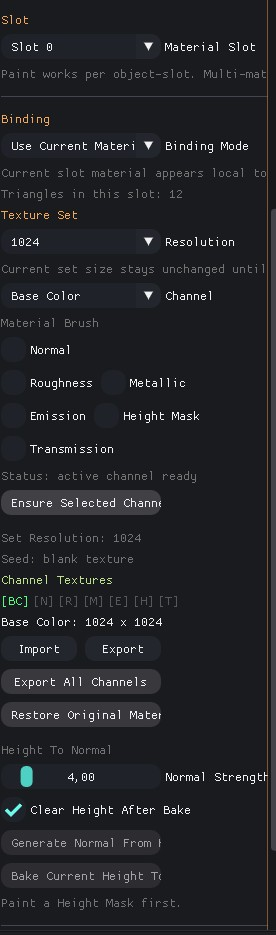
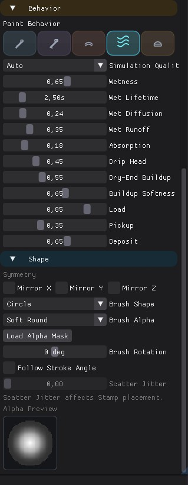
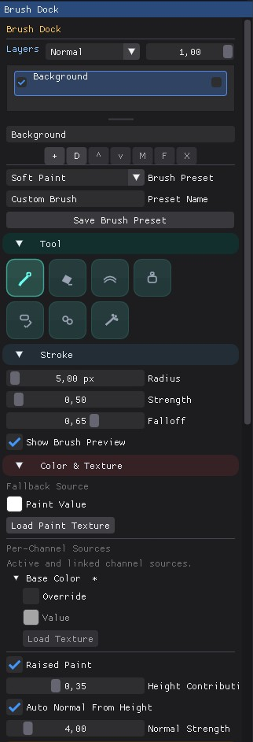

Mesh Paint

docs/images/mesh_paint_header.jpgMesh Paint in RayTrophi is split across two working areas: the left inspector that binds the target, slot, and texture set, and the right brush dock that holds layers, tools, stroke controls, color sources, behavior, and brush shape.
This page mirrors the current implementation in the UI code so the docs match the real editor layout.
1. Workspace Layout
Left Main Panel
- Paint Mode enable and compact toggle
- Mesh target, material slot, and binding mode
- Texture set resolution and active channel
- Channel texture import, export, and bake actions
Right Brush Dock
- Layer stack with visibility, lock, blend, and opacity
- Tool, stroke, color, and per-channel source controls
- Wet, mix, smudge, and oil behavior settings
- Shape, alpha, stamp, spray, and fill controls
2. Left Main Panel

docs/images/mesh_paint_left_panel.jpgThe main inspector is the setup side of mesh painting. It decides which object-slot is editable, how textures are bound, and which channels exist before any brush stroke is applied.
| Section | Role |
|---|---|
| Target | Shows the active mesh and the selected material name for the current slot. |
| Slot | Switches between material slots on multi-material meshes. |
| Binding | Chooses between painting the current shared material or making a unique paint material. |
| Texture Set | Creates, resizes, seeds, restores, bakes, and exports channel textures. |
| Channel Textures | Displays per-channel occupancy and import or export for the active channel. |
The left side is intentionally about ownership and texture-set lifecycle. Brush editing itself is moved to the dock so viewport painting stays focused and the layer stack remains visible while working.
3. Right Brush Dock
The brush dock opens on the right while Paint Mode is active. Its top starts with the layer panel, then brush presets and tool selection, then continues through stroke, color, behavior, and shape sections.
| Dock Area | Contains |
|---|---|
| Layer Stack | Photoshop-style rows, active layer selection, blend mode, opacity, and layer actions. |
| Tool + Stroke | Paint, erase, soften, stamp, fill, clone, spray, radius, strength, falloff, spacing, and flow. |
| Color & Texture | Fallback paint value, imported paint texture, per-channel overrides, and raised paint controls. |
| Behavior | Mix, smudge, wet, and oil parameters including simulation quality and paint transport. |
| Shape + Alpha | Mirror axes, shape preset, alpha preset, imported alpha, rotation, and preview widgets. |

docs/images/mesh_paint_brush_dock_top.jpg
docs/images/mesh_paint_brush_dock_bottom.jpg4. Practical Flow
1. Bind
Select the mesh, choose the material slot, and decide whether the slot stays shared or becomes unique for paint.
2. Prepare
Create the texture set, enable the channels you want to paint, and seed from existing textures if the material already has maps.
3. Layer
Use the dock layer stack to separate color, height-mask buildup, and material variation without flattening too early.
4. Paint
Switch tools, tune stroke and behavior, then paint directly in the viewport while the dock stays available on the right.